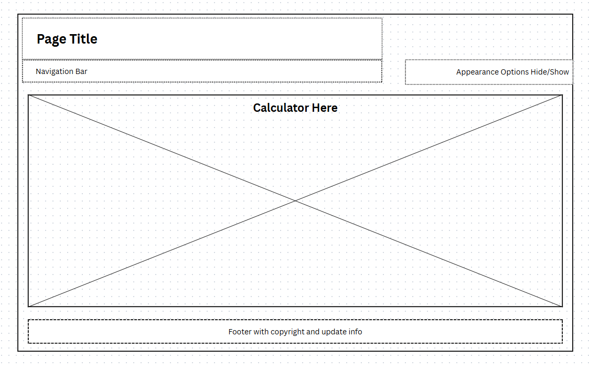
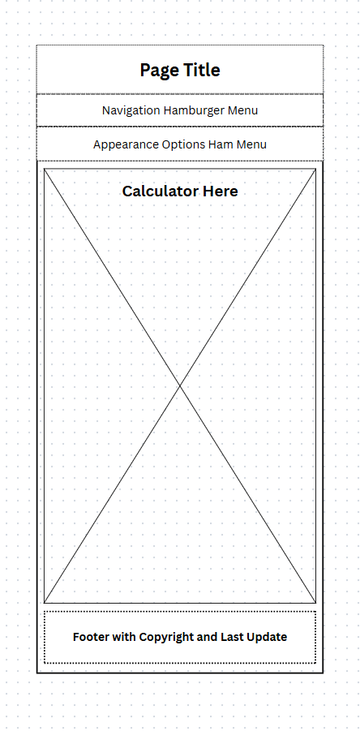

Site Name
Possible Domain: csszencalc.net
This name represents the website's simple premise with an emphasis on being able to change the CSS.
Site Porpose
This site is a simple web page of a scientific calculator with a variable backdrop. This backdrop can be changed by selecting from a list of appearance options. Or by making a custom one. Much like CSS Zen Garden, only for a calculator. Users also have the ability of choosing between basic, scientific, or graphing calculators.
Possible Scenarios
Can this web page provide me with calculators that function properly?
How can this web page provide me with fun new way to use a calculator?
Color Schema
This website will ultilize multiple schema, depending on the user's choice. But the default scheme will be a basic white background, a gray container for the calculator itself, darker greys or blues for the buttons, and blue for the enter button and textbox.
Typography
Barlow Semi Condensed: This font will by ultilized by most elements of the pages
PT Serif: Optional user choice to give the calculators a more professional feel.
Wireframes

